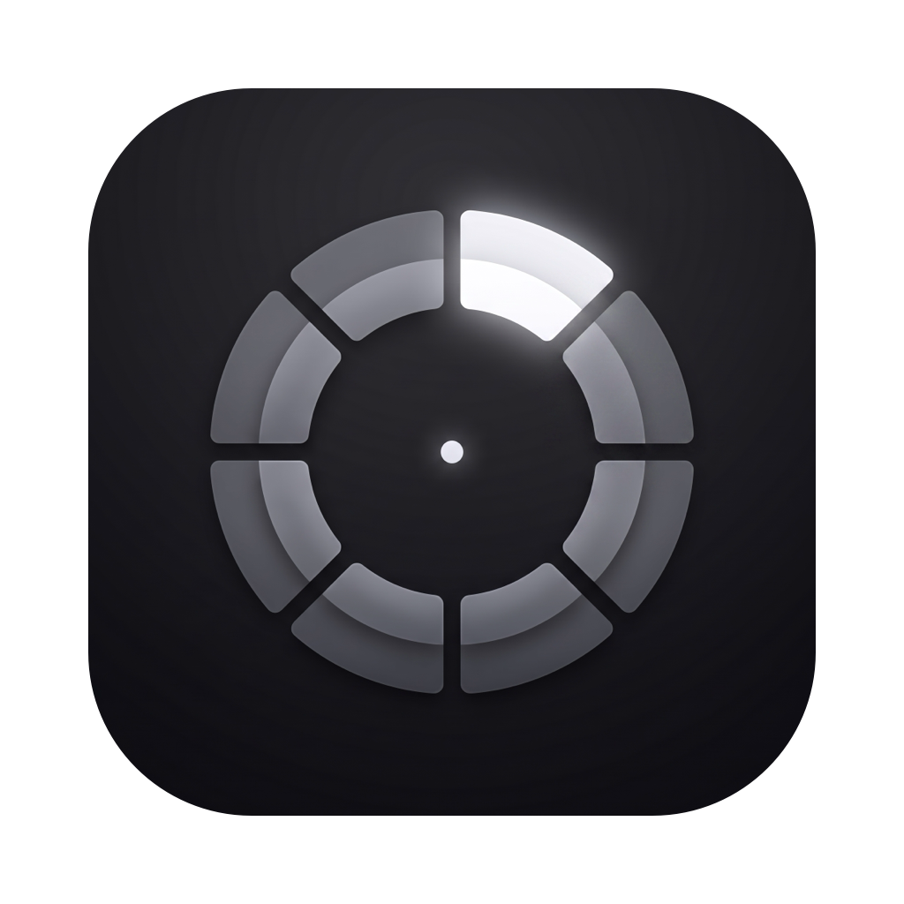

Snip
Radial snippet menu for macOS
macOS 14+Snip waits in your menu bar. Hold your trigger — the middle mouse button, a thumb button, or a keyboard shortcut — and a ring of snippets blooms under the cursor. Drag toward a wedge, release, and the text lands wherever you're typing, in any app. Tokens like {date} and {clipboard} fill in as they go, and $| marks where the cursor should end up.
Install
$ brew install --cask hex/tap/snip
Or download directly from GitHub Releases.
Developer ID signed and notarized by Apple.
Features
Radial insert at the cursor
Hold, double-click, or shortcut
Live loupe hub
Visual ring editor
$| caret & {tokens}
Works over fullscreen apps
Per-app exceptions
Follows your accent
All data local
Auto-update via Sparkle